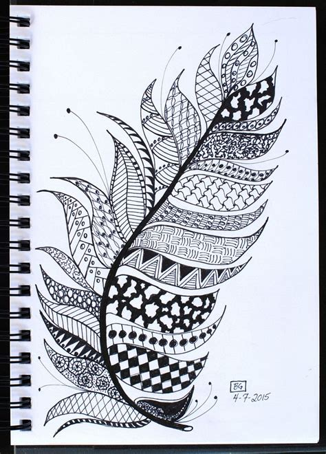
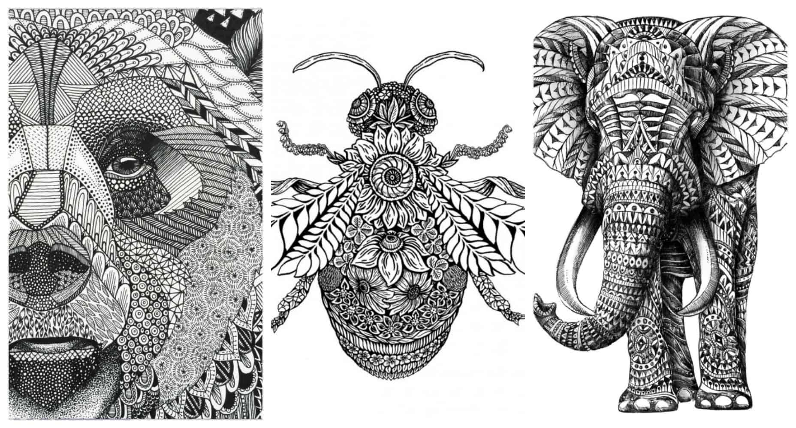
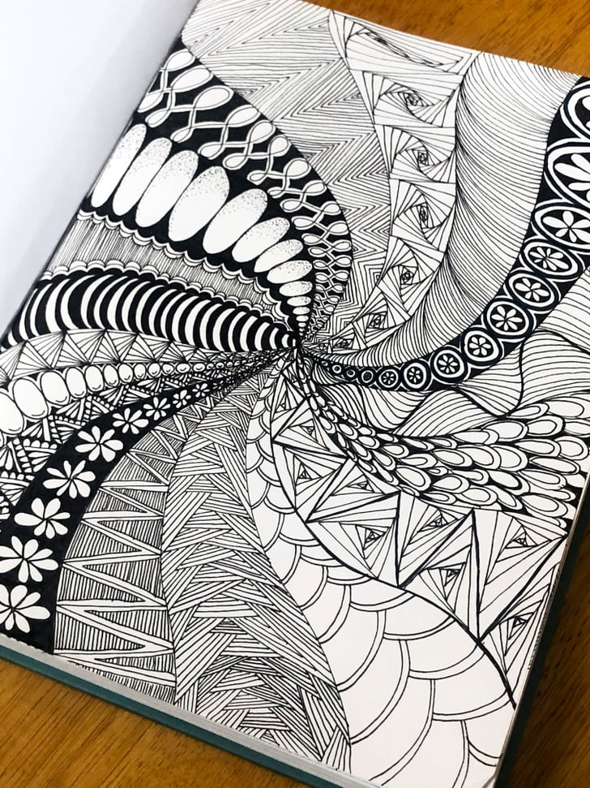
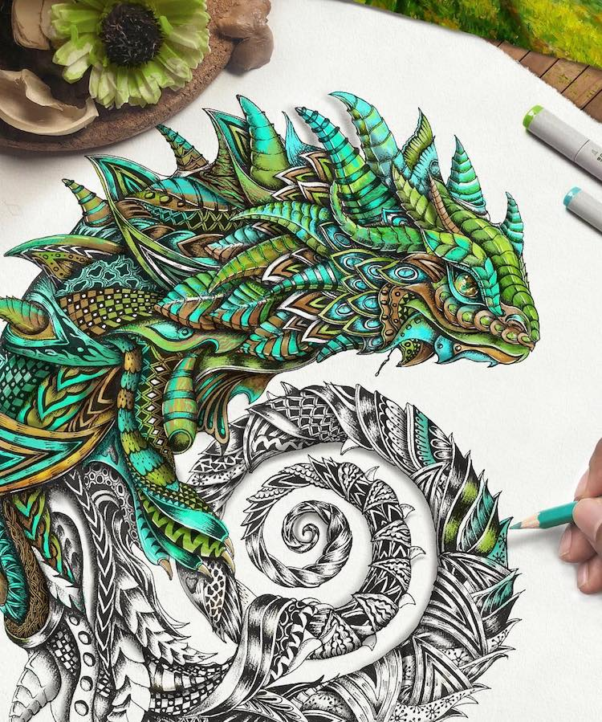
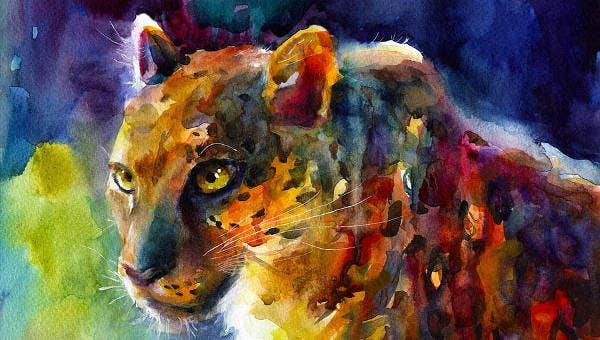
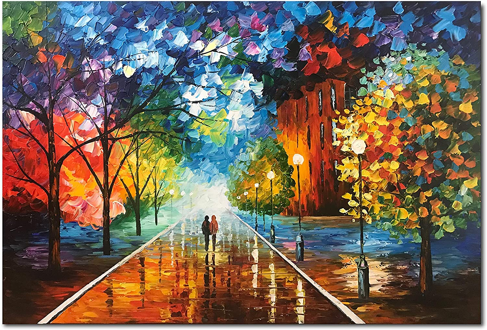
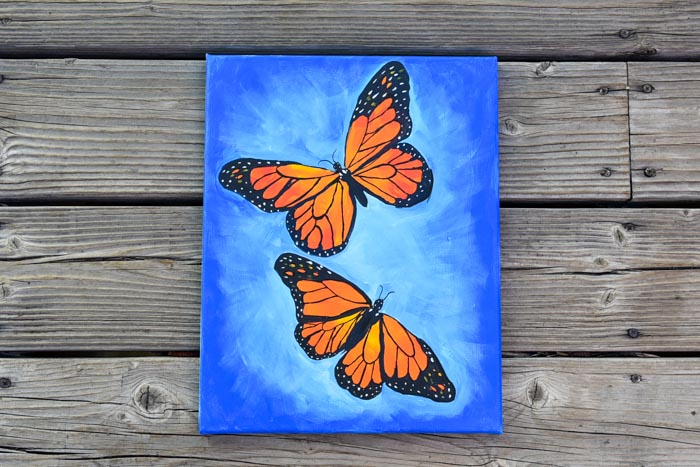

Hi! Welcome to My Drawing Page, here I will be presnting some information about drawing and why I like it a lot.
I love anything that has to do with colouring or painting because it is very relaxing and calming. Whenver I'm stressed, painting helps me feel more relaxed because you are expressing yourself in all sorts of pictures and colours.
I specifically love to draw zentangles. I love to draw zentangles because it's something where you draw many designs of your choice freely. The designs can range from being very complex or even very simple.After a long day, drawing helps me rewind and clear my mind because I would be so focased in what I'm illustrating rather than what was stressing me out. Also you can draw these designs within a bigger picture such as the examples below.
 Painting is similar to drawing but when you paint I like how you use many colours on your art piece. I prefer to paint than draw because although it takes time you can be more detailed about it and be however detailed you want. It could be abstarct or very specifc or even very simple pictures, the colors of the paint your using is what makes it come to life. I don't really like making my paintings very detailed because it takes a lot of time and patience, instead I like to paint bigger, less-detailed pictures because it's easier and you can a more wide range of colours. Lastly my favourite type of paint is watercolour paint paint because it's very nice to work with, blends with other colours beautifully, and can make the best nature seneries. Below you can see some art work and paintings that expresses what I wrote in this paragraph.
  These are the reasons why I like drawing and painting!